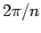

Inhalt Index DeskTop Bronstein

 Algebra und Diskrete Mathematik Klassische algebraische Strukturen Anwendungen von Gruppen Symmetriegruppen in der Kristallographie
Algebra und Diskrete Mathematik Klassische algebraische Strukturen Anwendungen von Gruppen Symmetriegruppen in der Kristallographie


Unter den Symmetrieoperationen, die das Raumgitter in äquivalente Lagen überführen, sind auch Punktgruppen-Operationen, wie gewisse Drehungen, Drehspiegelungen und Spiegelungen an Ebenen oder Punkten. Allerdings sind nicht alle Punktgruppen auch kristallographische Punktgruppen. Die Forderung, daß die Anwendung der Gruppenelemente auf einen Gittervektor  wieder einen Gittervektor (L: Gesamtheit aller Gitterpunkte) ergeben muß, schränkt die zugelassenen Punktgruppen P mit den Gruppenelementen P(R) ein:
wieder einen Gittervektor (L: Gesamtheit aller Gitterpunkte) ergeben muß, schränkt die zugelassenen Punktgruppen P mit den Gruppenelementen P(R) ein:
Dabei bedeutet R einen eigentlichen oder uneigentlichen Rotationsoperator . Mit einer Gitterstruktur verträglich sind z.B. nur Drehachsen mit der Zähligkeit 1,2,3,4 oder . Insgesamt gibt es 32 kristallographische Punktgruppen  .
.
Die Symmetriegruppe eines Raumgitters kann auch Operationen enthalten, die aus einer simultanen Ausführung von Drehungen und primitiven Translationen bestehen. Auf diese Weise erhält man Gleitspiegelungen, d.h. Spiegelungen an einer Ebene und Translationen parallel zur Ebene, und Schraubungen, d.h. Rotation um  und Translationen um . Diese Operationen heißen nichtprimitive Translationen , da sie ,,gebrochenen`` Translationen entsprechen. Bei einer Gleitspiegelung ist R eine Spiegelung, bei einer Schraubung ist R eine eigentliche Rotation.
Die Elemente der Raumgruppe  , die ein Kristallgitter invariant läßt, setzen sich also aus Elementen R der kristallographischen Punktgruppe
, die ein Kristallgitter invariant läßt, setzen sich also aus Elementen R der kristallographischen Punktgruppe  , primitiven Translationen
, primitiven Translationen  und nichtprimitiven Translationen
und nichtprimitiven Translationen  zusammen:
zusammen:
Das neutrale Element der Raumgruppe ist , wobei e das neutrale Element in P bedeutet. Das Element  bedeutet eine primitive Translation, steht für eine Drehung oder Spiegelung. Bei der Anwendung des Gruppenelementes auf den Ortsvektor
bedeutet eine primitive Translation, steht für eine Drehung oder Spiegelung. Bei der Anwendung des Gruppenelementes auf den Ortsvektor  erhält man
erhält man